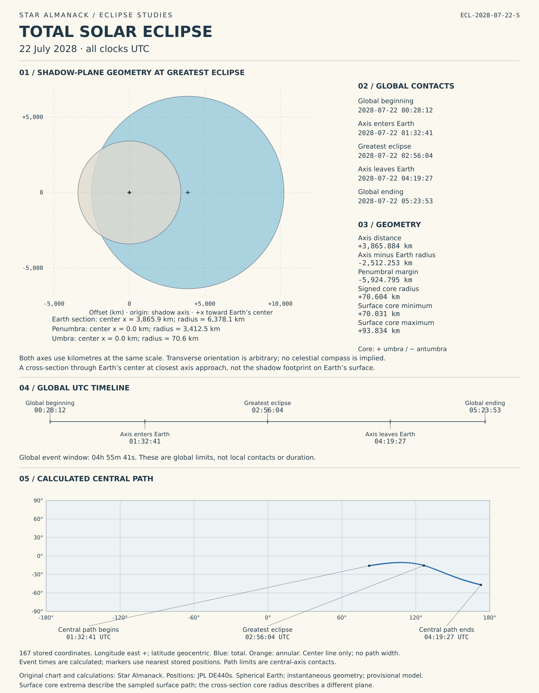

Total solar eclipse
2028-07-22
Calculated solar eclipse study chart


Artwork generated by Star Almanack from its stored shadow geometry; Sun, Earth, and Moon positions use the credited JPL kernel.
Calculated central path coordinates
The central path appears in the study chart above. Star Almanack calculates these coordinates from its Sun–Moon shadow geometry. Longitude is positive east.
This uses a spherical Earth and instantaneous geometric positions. It does not yet include Earth’s flattening, light-time corrections, path width, local contact times, or the wider partial-eclipse visibility area. Future Earth rotation is estimated. Coordinates are model results, not a precision observing-site boundary.
Download coordinates (CSV) · Download track (GeoJSON)
All 167 calculated coordinates
| UTC | Latitude | Longitude | Central phase |
|---|---|---|---|
| -15.9395° | 82.1384° | total | |
| -15.0663° | 84.8039° | total | |
| -14.4443° | 86.8034° | total | |
| -13.9529° | 88.4600° | total | |
| -13.5455° | 89.8985° | total | |
| -13.1983° | 91.1826° | total | |
| -12.8969° | 92.3501° | total | |
| -12.6320° | 93.4256° | total | |
| -12.3973° | 94.4262° | total | |
| -12.1880° | 95.3644° | total | |
| -12.0005° | 96.2494° | total | |
| -11.8321° | 97.0885° | total | |
| -11.6806° | 97.8874° | total | |
| -11.5442° | 98.6510° | total | |
| -11.4215° | 99.3829° | total | |
| -11.3111° | 100.0864° | total | |
| -11.2121° | 100.7642° | total | |
| -11.1235° | 101.4187° | total | |
| -11.0447° | 102.0518° | total | |
| -10.9748° | 102.6653° | total | |
| -10.9134° | 103.2607° | total | |
| -10.8599° | 103.8393° | total | |
| -10.8138° | 104.4024° | total | |
| -10.7748° | 104.9510° | total | |
| -10.7425° | 105.4860° | total | |
| -10.7165° | 106.0084° | total | |
| -10.6965° | 106.5188° | total | |
| -10.6823° | 107.0181° | total | |
| -10.6736° | 107.5068° | total | |
| -10.6702° | 107.9855° | total | |
| -10.6719° | 108.4548° | total | |
| -10.6785° | 108.9152° | total | |
| -10.6898° | 109.3671° | total | |
| -10.7057° | 109.8110° | total | |
| -10.7260° | 110.2472° | total | |
| -10.7505° | 110.6762° | total | |
| -10.7792° | 111.0983° | total | |
| -10.8119° | 111.5137° | total | |
| -10.8486° | 111.9229° | total | |
| -10.8890° | 112.3260° | total | |
| -10.9331° | 112.7234° | total | |
| -10.9809° | 113.1153° | total | |
| -11.0322° | 113.5020° | total | |
| -11.0870° | 113.8836° | total | |
| -11.1451° | 114.2604° | total | |
| -11.2066° | 114.6326° | total | |
| -11.2713° | 115.0003° | total | |
| -11.3391° | 115.3638° | total | |
| -11.4102° | 115.7232° | total | |
| -11.4842° | 116.0788° | total | |
| -11.5614° | 116.4306° | total | |
| -11.6415° | 116.7788° | total | |
| -11.7245° | 117.1235° | total | |
| -11.8104° | 117.4650° | total | |
| -11.8992° | 117.8033° | total | |
| -11.9908° | 118.1386° | total | |
| -12.0851° | 118.4709° | total | |
| -12.1822° | 118.8005° | total | |
| -12.2821° | 119.1274° | total | |
| -12.3846° | 119.4517° | total | |
| -12.4898° | 119.7736° | total | |
| -12.5976° | 120.0932° | total | |
| -12.7080° | 120.4106° | total | |
| -12.8211° | 120.7258° | total | |
| -12.9367° | 121.0390° | total | |
| -13.0549° | 121.3502° | total | |
| -13.1756° | 121.6597° | total | |
| -13.2989° | 121.9673° | total | |
| -13.4246° | 122.2734° | total | |
| -13.5529° | 122.5779° | total | |
| -13.6837° | 122.8809° | total | |
| -13.8169° | 123.1825° | total | |
| -13.9527° | 123.4828° | total | |
| -14.0909° | 123.7819° | total | |
| -14.2315° | 124.0799° | total | |
| -14.3747° | 124.3768° | total | |
| -14.5202° | 124.6727° | total | |
| -14.6683° | 124.9678° | total | |
| -14.8188° | 125.2621° | total | |
| -14.9718° | 125.5556° | total | |
| -15.1272° | 125.8485° | total | |
| -15.2851° | 126.1408° | total | |
| -15.4454° | 126.4327° | total | |
| -15.5076° | 126.5444° | total | |
| -15.6083° | 126.7241° | total | |
| -15.7736° | 127.0152° | total | |
| -15.9414° | 127.3061° | total | |
| -16.1117° | 127.5968° | total | |
| -16.2846° | 127.8874° | total | |
| -16.4599° | 128.1781° | total | |
| -16.6378° | 128.4688° | total | |
| -16.8182° | 128.7596° | total | |
| -17.0013° | 129.0508° | total | |
| -17.1869° | 129.3422° | total | |
| -17.3751° | 129.6341° | total | |
| -17.5659° | 129.9265° | total | |
| -17.7594° | 130.2195° | total | |
| -17.9556° | 130.5132° | total | |
| -18.1544° | 130.8076° | total | |
| -18.3560° | 131.1029° | total | |
| -18.5604° | 131.3992° | total | |
| -18.7675° | 131.6966° | total | |
| -18.9774° | 131.9952° | total | |
| -19.1902° | 132.2950° | total | |
| -19.4059° | 132.5962° | total | |
| -19.6246° | 132.8989° | total | |
| -19.8461° | 133.2032° | total | |
| -20.0707° | 133.5092° | total | |
| -20.2984° | 133.8170° | total | |
| -20.5292° | 134.1268° | total | |
| -20.7631° | 134.4387° | total | |
| -21.0002° | 134.7529° | total | |
| -21.2406° | 135.0694° | total | |
| -21.4844° | 135.3884° | total | |
| -21.7315° | 135.7100° | total | |
| -21.9821° | 136.0345° | total | |
| -22.2362° | 136.3619° | total | |
| -22.4939° | 136.6925° | total | |
| -22.7553° | 137.0263° | total | |
| -23.0205° | 137.3637° | total | |
| -23.2895° | 137.7048° | total | |
| -23.5625° | 138.0498° | total | |
| -23.8395° | 138.3989° | total | |
| -24.1207° | 138.7523° | total | |
| -24.4061° | 139.1103° | total | |
| -24.6960° | 139.4732° | total | |
| -24.9903° | 139.8411° | total | |
| -25.2893° | 140.2144° | total | |
| -25.5931° | 140.5934° | total | |
| -25.9018° | 140.9784° | total | |
| -26.2156° | 141.3698° | total | |
| -26.5347° | 141.7678° | total | |
| -26.8593° | 142.1729° | total | |
| -27.1896° | 142.5856° | total | |
| -27.5258° | 143.0062° | total | |
| -27.8681° | 143.4353° | total | |
| -28.2167° | 143.8733° | total | |
| -28.5721° | 144.3209° | total | |
| -28.9344° | 144.7787° | total | |
| -29.3040° | 145.2473° | total | |
| -29.6812° | 145.7274° | total | |
| -30.0664° | 146.2199° | total | |
| -30.4601° | 146.7257° | total | |
| -30.8628° | 147.2457° | total | |
| -31.2748° | 147.7811° | total | |
| -31.6969° | 148.3330° | total | |
| -32.1297° | 148.9028° | total | |
| -32.5738° | 149.4920° | total | |
| -33.0302° | 150.1023° | total | |
| -33.4997° | 150.7358° | total | |
| -33.9833° | 151.3947° | total | |
| -34.4823° | 152.0815° | total | |
| -34.9982° | 152.7994° | total | |
| -35.5325° | 153.5518° | total | |
| -36.0871° | 154.3431° | total | |
| -36.6645° | 155.1785° | total | |
| -37.2675° | 156.0641° | total | |
| -37.8995° | 157.0078° | total | |
| -38.5650° | 158.0195° | total | |
| -39.2697° | 159.1121° | total | |
| -40.0213° | 160.3030° | total | |
| -40.8302° | 161.6163° | total | |
| -41.7117° | 163.0874° | total | |
| -42.6899° | 164.7720° | total | |
| -43.8059° | 166.7672° | total | |
| -45.1441° | 169.2728° | total | |
| -46.9474° | 172.8711° | total |
What this eclipse means
The Moon passes between Earth and the Sun and completely covers the Sun’s bright surface for observers inside a narrow path of totality. The much fainter outer atmosphere, the corona, becomes visible around the Moon. Observers outside that path but within the wider visibility region see a partial eclipse.
What to look for
Inside the path of totality, look for the corona’s delicate structure and the sudden change in daylight. Notice the surrounding sky and horizon as well as the eclipsed Sun. Outside the totality path, follow the changing crescent with proper solar protection; totality does not occur at every viewing location.
This event
- Greatest eclipse (UTC)
- July 22, 2028 at 02:56:04 UTC
- Position source
- JPL DE440s kernel; Star Almanack shadow geometry
Timing and phases
All times are UTC. Convert both date and time to your local time.
These are global limits, not contact times or duration at your location.
| Phase | UTC |
|---|---|
| Eclipse begins somewhere on Earth global_begin | |
| Shadow axis enters Earth’s spherical surface axis_entry | |
| Greatest eclipse greatest_utc | |
| Shadow axis leaves Earth’s spherical surface axis_exit | |
| Eclipse ends everywhere on Earth global_end |
Durations derived from the stored times
- Global event window; not duration at one location (global_begin–global_end): 4 h 55 min 41 s
Calculated geometry
Stored catalog values at greatest eclipse. Signs and precision are retained as calculated.
| Quantity | Value | Meaning |
|---|---|---|
| Shadow-axis distance axis_distance_km | 3865.884 km | Closest distance of the Sun–Moon shadow axis from Earth’s center at greatest eclipse. |
| Penumbral margin penumbra_margin_km | -5924.795 km | Axis distance minus the sum of Earth’s radius and the penumbral radius; negative indicates overlap in the engine’s geometry. |
| Shadow-axis margin central_margin_km | -2512.253 km | Axis distance minus Earth’s radius; negative means the shadow axis passes inside Earth’s radius. |
| Signed central-shadow radius core_radius_km | 70.604 km | Shadow-core radius at the plane of closest axis approach to Earth’s center. Positive denotes umbra; negative denotes antumbra. |
| Minimum surface shadow-core radius surface_core_radius_min_km | 70.031 km | Smallest sampled signed core radius where the shadow axis meets the near-side spherical Earth surface. Negative indicates annularity. |
| Maximum surface shadow-core radius surface_core_radius_max_km | 93.834 km | Largest sampled signed core radius along that surface path. Positive indicates totality. Opposite signs between the extrema indicate a hybrid eclipse. |
Watching the eclipse
Use eclipse glasses or a handheld solar viewer meeting ISO 12312-2 for direct viewing. Ordinary sunglasses are not suitable. Binoculars, cameras, and telescopes require purpose-made solar filters secured over the front of the optics; never look through them using eclipse glasses alone. Only at a location experiencing totality, while the Sun’s bright surface is completely covered, may you look directly without a solar viewer. Replace it before the bright surface reappears.
Calculation records
Download complete stored record (JSON)
Sources
Sources: NASA: solar viewing safety
Explanatory text and eclipse calculations are original work by Star Almanack. The calculations use Sun, Earth, and Moon positions from JPL’s DE440s ephemeris kernel. Event times, shadow geometry, and the supplied central-path coordinates are calculated by Star Almanack from those positions.